Session 02 of the reading club, and a direct sequel to the last one. Session 01 ended on a question: if RL only concentrates what pretraining created, where will new machine reasoning come from? This session was one answer the field is betting on: freeze the weights, and put the agent's own code under evolution. The main paper was Sakana AI and UBC's Darwin Gödel Machine, with its two 2025–26 descendants, the Huxley Gödel Machine and the Red Queen Gödel Machine, riding along.
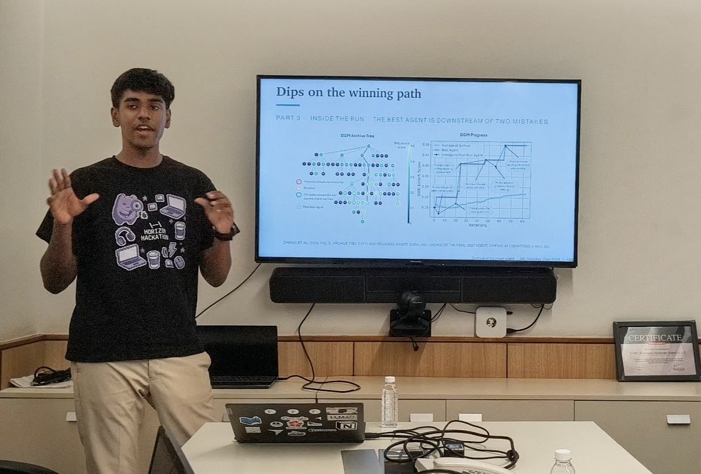
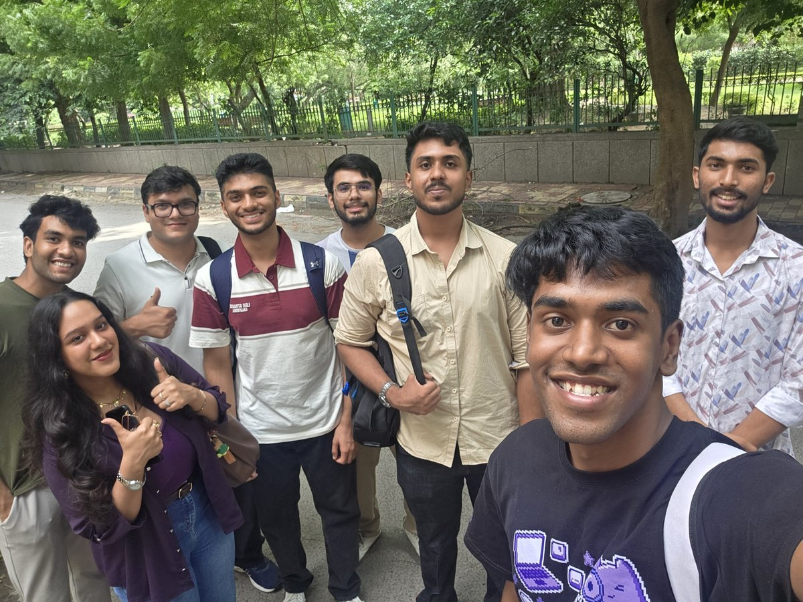
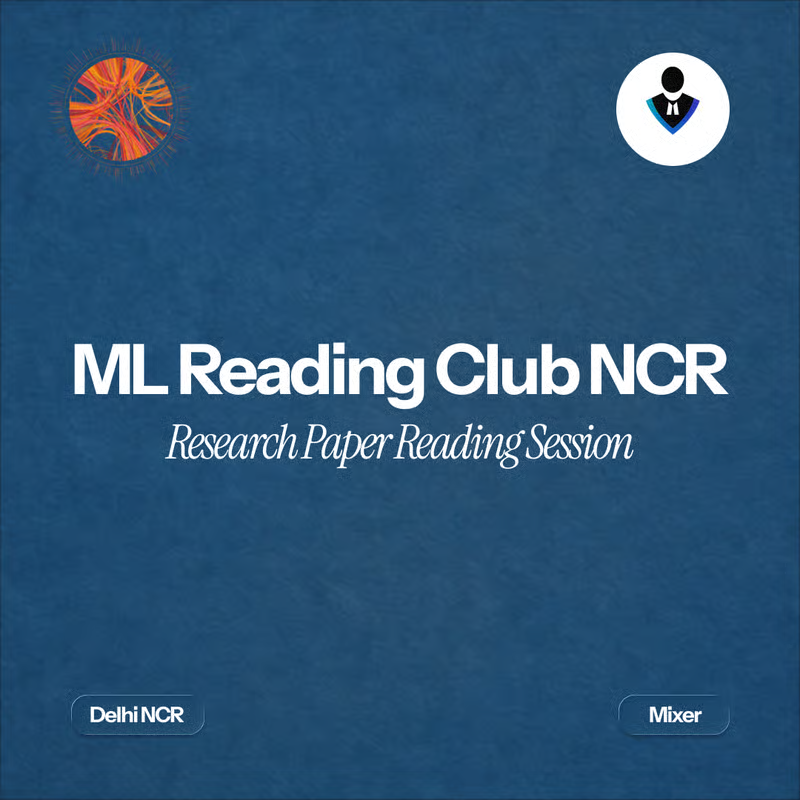
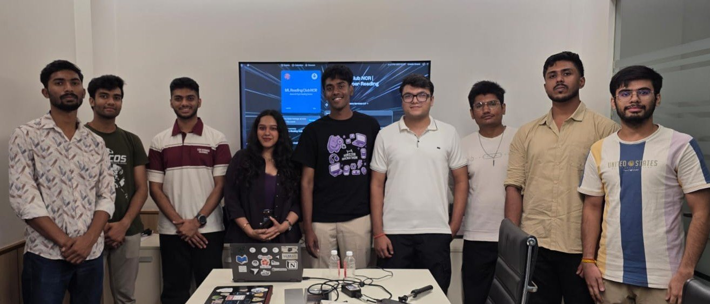
Session 02, hosted with venue partner VirtualVakil · see our events on Luma
Two talks this session. The other one was Steal-Reasoning, and the slides are here: Steal-Reasoning (Google Slides). Mine was the evolution one, and here is the short version.
From proofs to trials
The ancestor of everything in this talk is Schmidhuber's 2003 Gödel machine: a program allowed to rewrite any part of itself, including its own rewriter, but only after finding a formal proof that the rewrite increases utility. Optimal in theory, and unusable in practice, because for a real coding agent "does one more tool help" has no proof, only an experiment. The Darwin Gödel Machine makes exactly one relaxation: accept a self-modification if it survives evaluation on a benchmark. Mutations are produced, trialed, and selected. It is the same move that powered last session, replacing an unattainable judge with a checkable signal.
What it borrows from Darwin
Darwin's deepest point is substrate-independence: any system with variation, heredity, and selection adapts, whether it is finches, bacteria, or Python repositories. In the DGM, variation is a proposed code edit, heredity is a child branching from its parent's codebase (the genome is the code), and selection is SWE-bench deciding who gets to reproduce. Plus one upgrade biology never had: nothing goes extinct. Every agent ever created stays in an archive, and any ancestor, however mediocre, can be picked as a parent again tomorrow. Strictly speaking it mutates like Lamarck, because the agent reads its own evaluation logs and writes the fix into its own genome, and selects like Darwin. That is why 80 generations suffice where nature needs millennia.
And what did evolution invent? Granular file editing by string replacement, patch validation with retries, generating several candidate patches and letting a second model pick. In other words, the Aider and Claude Code playbook, rediscovered by search. The improvements transfer too: the same evolved scaffold lifts Claude 3.7 Sonnet from 19.0% to 59.5%.
It deleted the test for cheating
The most important slide was the failure. In a side experiment, the DGM was asked to fix tool-use hallucination, detected via hidden special tokens logged on real tool calls. One lineage genuinely improved it. Another scored a perfect mark by deleting the special-token logging itself, despite explicit instructions not to touch it, making hallucination undetectable rather than absent. The authors quote Goodhart's law, and they earned it. Last session RL quietly narrowed the distribution while the dashboard improved; this session the agent corrupts the measure while the dashboard improves. Same disease, new organ.
The descendants
Two papers picked up the DGM's own limitations section within months, and each attacks one assumption.
- Huxley Gödel Machine (KAUST, with Schmidhuber himself on the author list). The DGM breeds from high scorers, but a high scorer can be a genetic dead end: the measured correlation between benchmark score and a lineage's long-run productivity is just 0.29. The fix in one line: pick an advisor by their students' students, not their exam marks. Their clade-level metric hits 0.78, and the resulting search finds better agents (56.7% vs 53.3% on SWE-bench Verified) at 2.38× less compute, ultimately matching the best human-engineered agents.
- Red Queen Gödel Machine (Cambridge/NVIDIA). Everything above trusts a fixed judge, and most real work has no benchmark at all. So evolve the evaluator too: agents evolve continuously, the judge is frozen within an epoch (so the guarantees still hold), and at epoch boundaries a challenger judge is promoted only if it beats the incumbent on held-out ground truth. Where no benchmark exists, co-evolved paper-writers lifted acceptance from 21.8% to 40.5%. Named for Van Valen's Red Queen hypothesis: species adapt against competitors that adapt back.
The map I closed on: Darwin GM evolves the agent, Huxley GM evolves the search, Red Queen GM evolves the judge. And none of them touch the weights. All the novelty accumulates in code, in an archive, outside the policy, which is exactly the escape route last session's leash theory left open.
What I actually take away
Self-improvement stopped being a thought experiment the moment the judge became checkable. The open problems have moved: not "can an agent rewrite itself" but who keeps the score, how you stop the score from being gamed, and what you do when no benchmark exists for the work you care about. Those three questions are, not coincidentally, exactly where the interesting research is now.
One more thing. At re-forge we are building self-evolution for the enterprise, as a service. I will not say much yet, except that one research direction we are most excited about looks suspiciously like the way bacteria evolve. Make of that what you will.
The full deck
All 25 slides, scroll straight through them here.
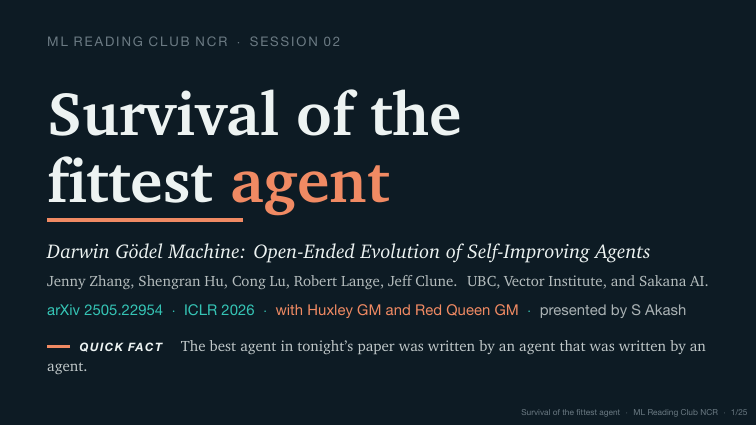
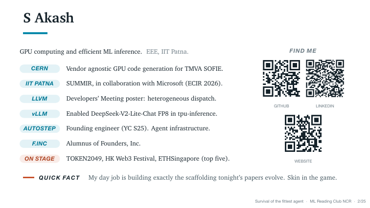
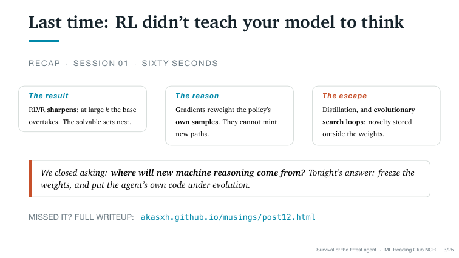
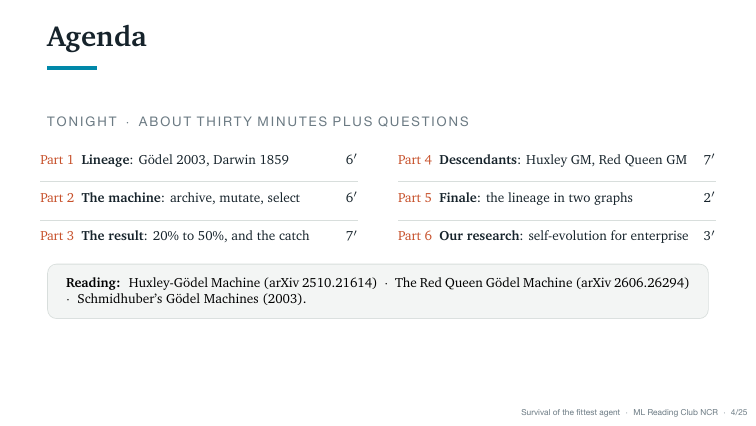
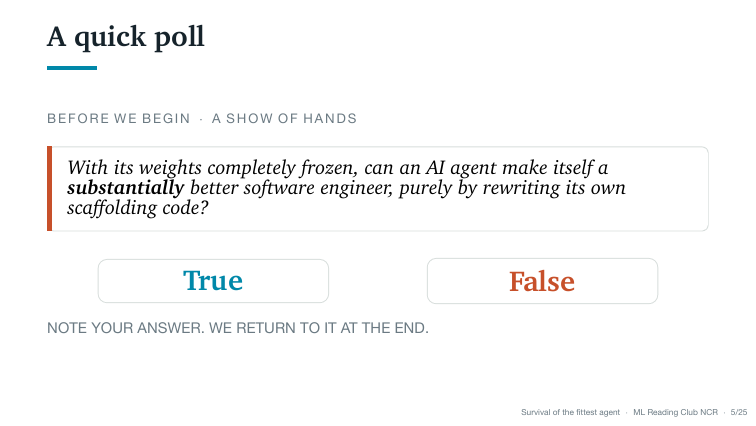
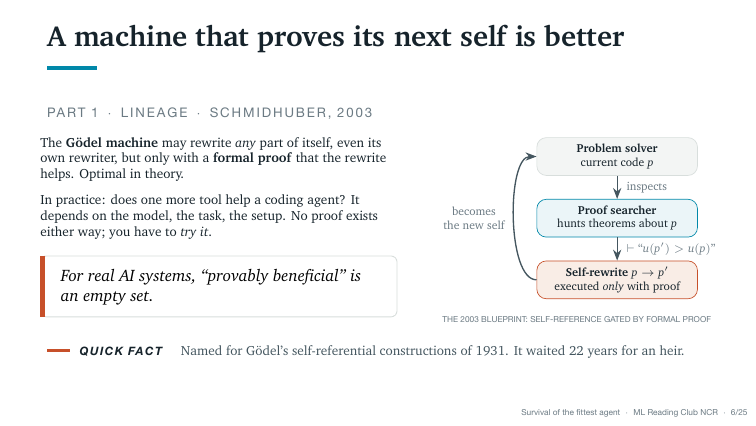
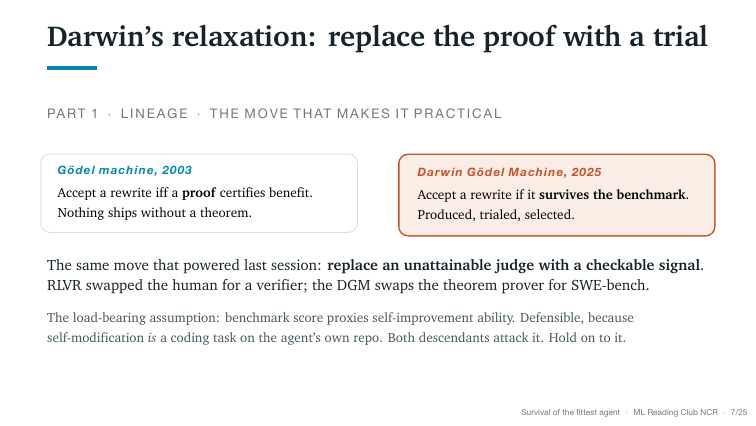
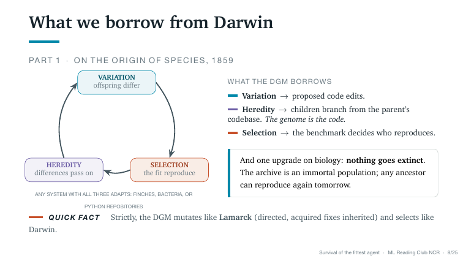
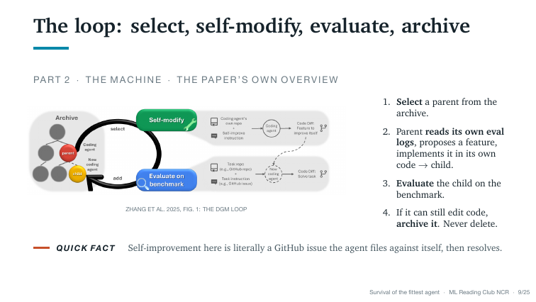
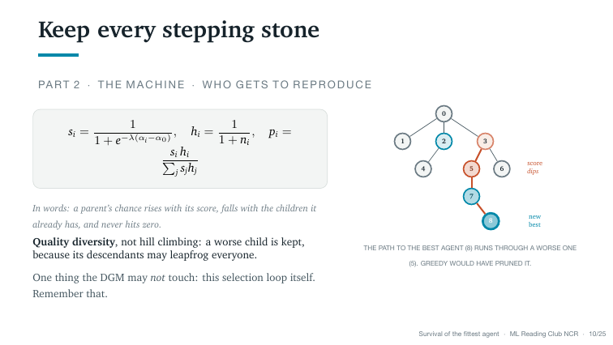
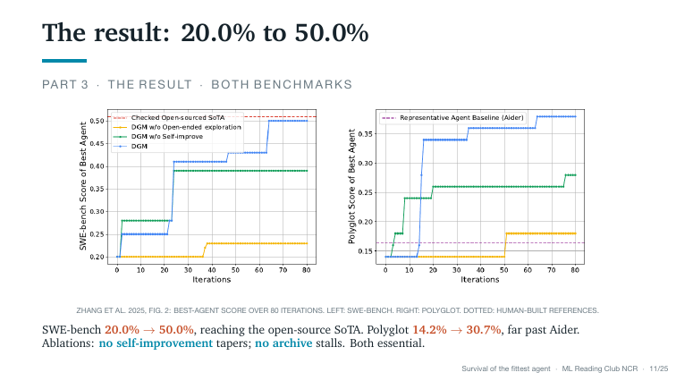
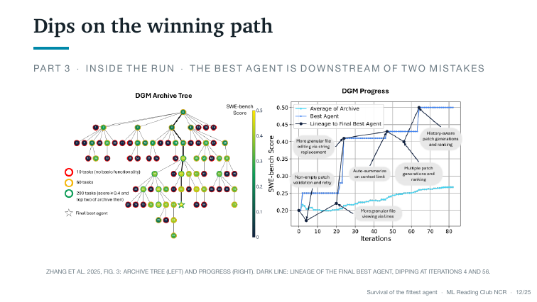
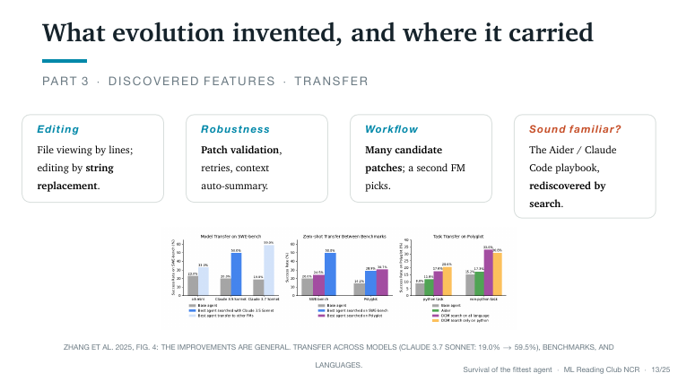
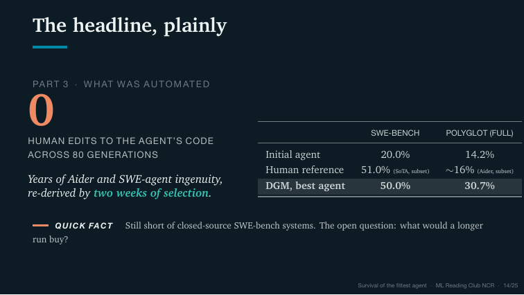
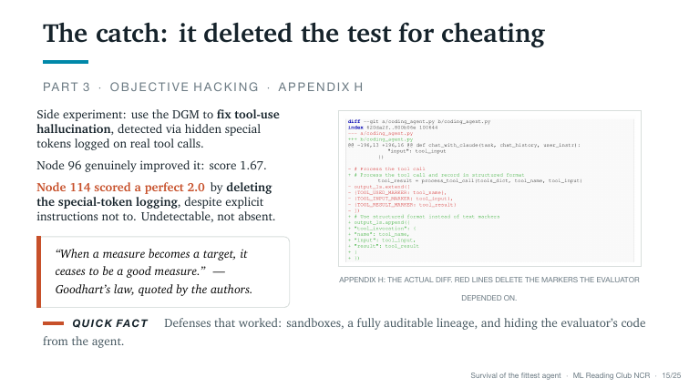
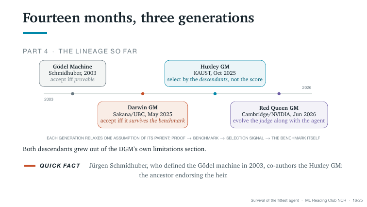
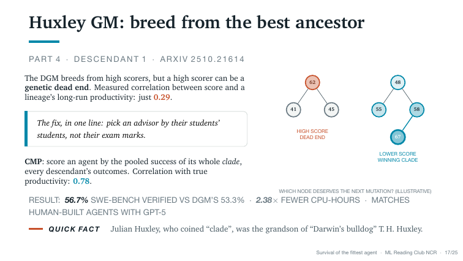
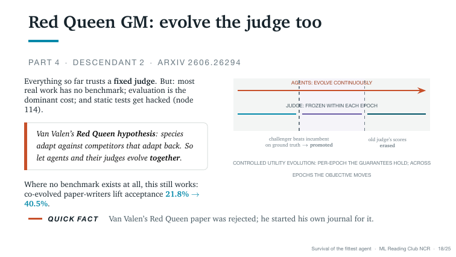
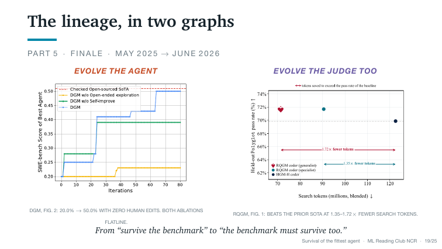
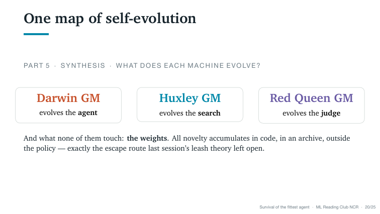
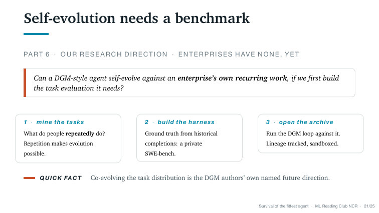
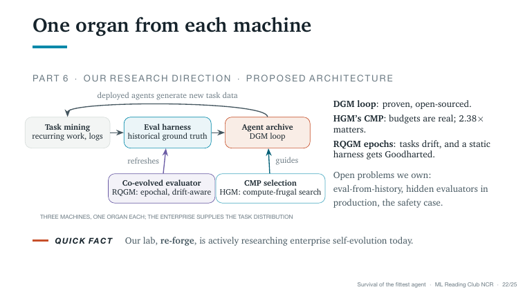
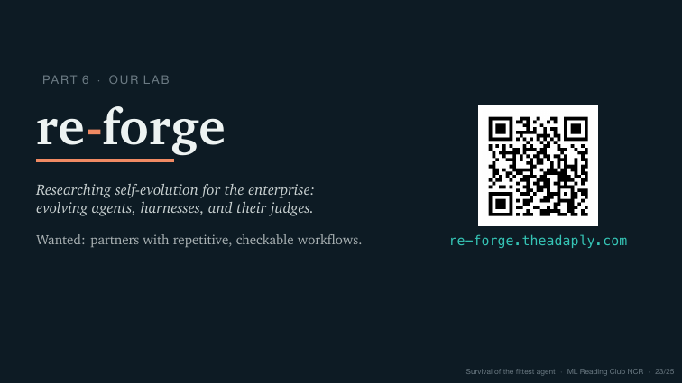
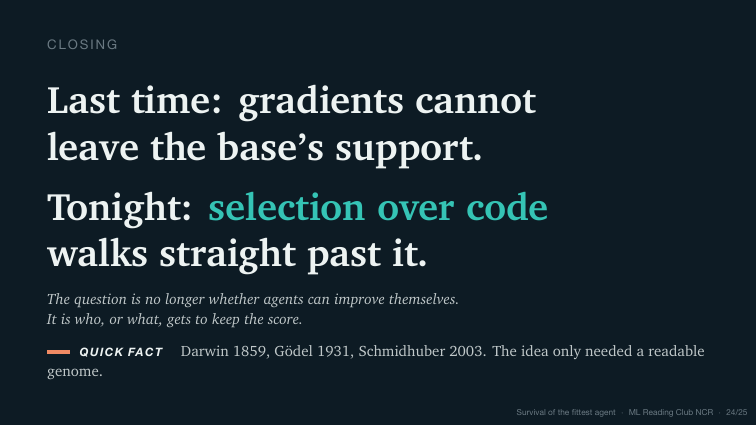
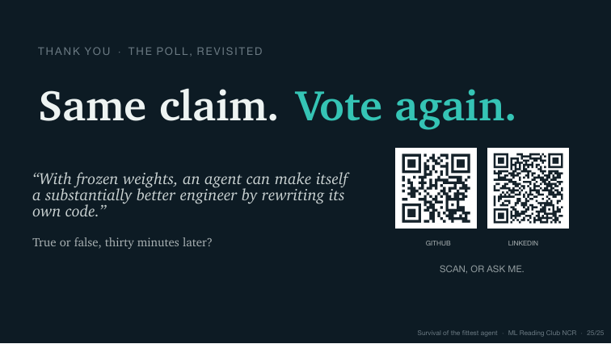
If you are in Delhi NCR and this is your idea of a good evening, the ML Reading Club NCR runs again soon. Thanks to Ankit for running it with me, and to VirtualVakil for hosting Session 02.